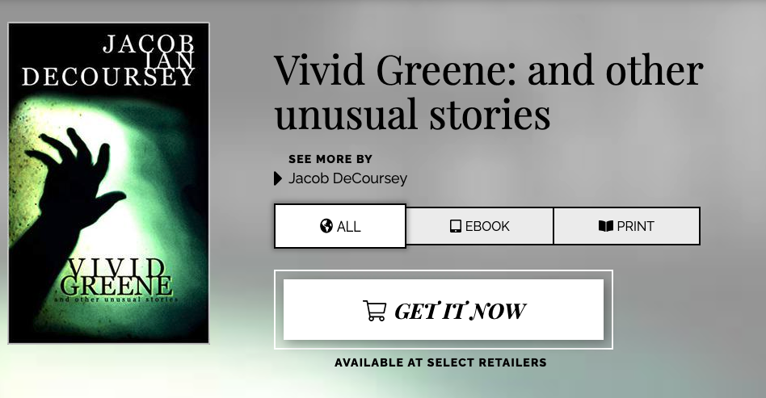

First Blog Post of the New Website
Posted By J.I. DeCoursey | Mar 25, 2022
What's shakin' My Lovely Bastards:
First blog post on this newfangled website and it's more shameless self-promotion. Spare a click? You know you want to!

Also, don't forget that brick-and-mortar bookstores still exist. Since my distro deals through Ingram, you can request Vivid Greene at nearly any bookseller in the US and Brittain. So go out into the wild and ask for it at your local Mom&Pop Shop, your nearest Hipster Hangout, and the closest Anarchist Bookstore Coffee House. The more people request it, the more stores might willingly stock it on their shelves.
Stay Ugly